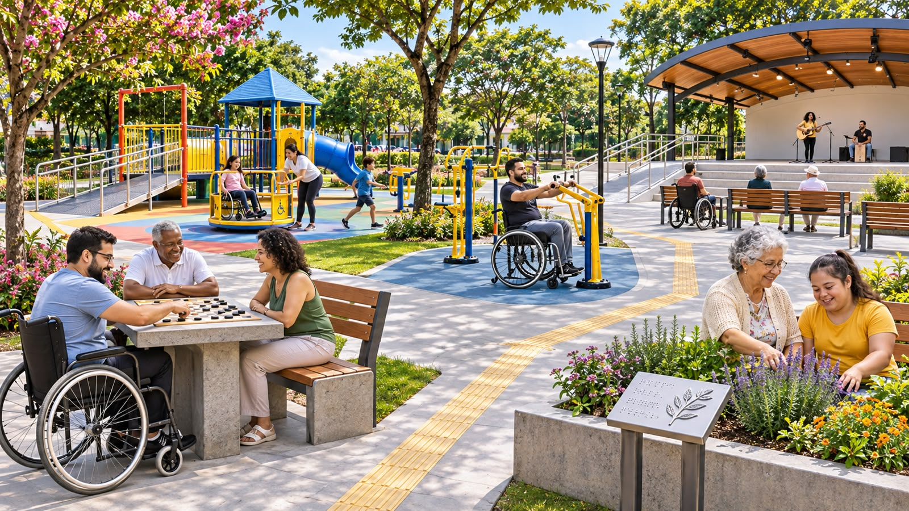
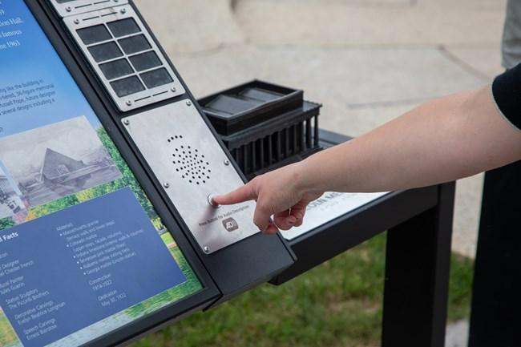
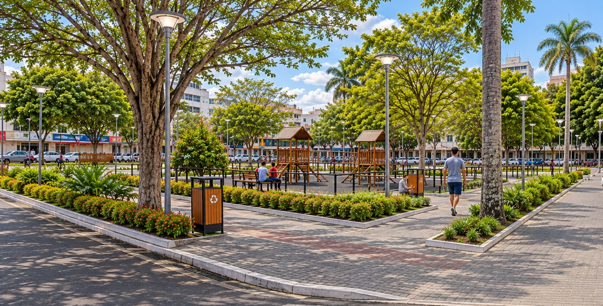
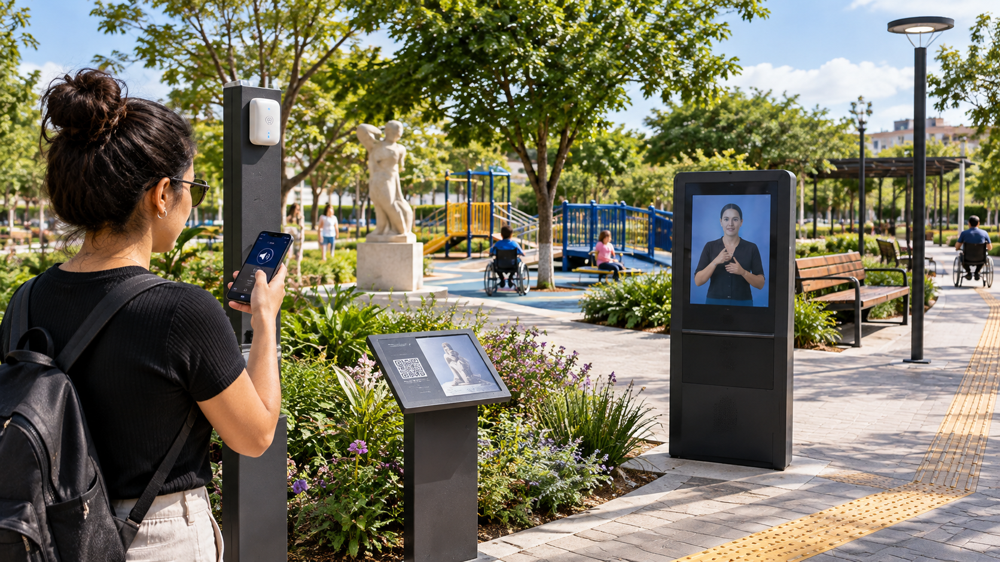

ESPAÇOS PÚBLICOS INCLUSIVOS
Praça para todos
Diretrizes, soluções e tecnologia para peças mais acessíveis, seguras e acolhedoras para toda a comunidade.
Mais acessibilidade para todos
Espaços públicos mais humanos
Conhecimento aplicado na prática
Participação da comunidade
Explore os temas
Conheça os principais assuntos relacionados à acessibilidade e à inclusão nos espaços públicos.

Mobiliário urbano
Saiba mais →
Lazer e convivência
Saiba mais →
Sinalização
Saiba mais →
Paisagismo e infraestrutura
Saiba mais →
Tecnologias assistivas
Saiba mais →
ANÁLISE INTEGRADA
Diagnóstico e avaliação
Uma avaliação abrangente que reúne os diferentes aspectos analisados para compreender as condições gerais de acessibilidade do espaço.

ACESSIBILIDADE E INCLUSÃO
Espaços públicos para todas as pessoas
Uma praça acessível é aquela que permite que todas as pessoas possam circular, participar e aproveitar seus espaços com autonomia, segurança e conforto.
Nosso projeto reúne conhecimentos, diretrizes e soluções para tornar os espaços públicos mais inclusivos e acolhedores.
Conheça as diretrizes →